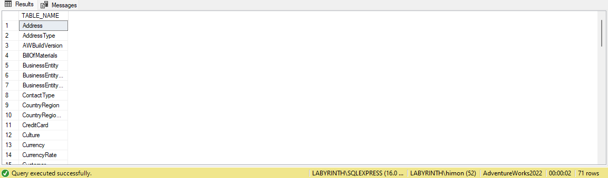
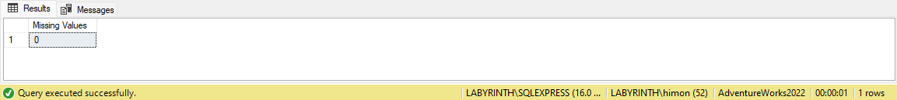
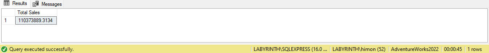
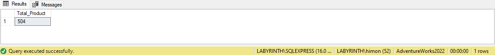
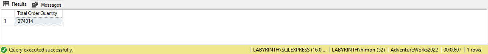

Glance:
About
I recently discovered the AdventureWorks database, and I have been having so much fun with it! Just because such a comprehensive database is difficult to come by, especially one based on real world applications.
Download the entire database by clicking on the link below:
Download Database
For a high resolution picture of the schema click the link below:
High Resolution Schema
AdventureWorks is a database provided by Microsoft. It is a product sample database originally published to demonstrate the supposed design of a SQL server database.
This database supports a fictitious, multinational manufacturing company that sells bicycles and cycling accessories. It is a sample Online Transaction Processing (or OLTP) database, which is a type of data processing where multiple transactions occur concurrently.
I will be taking a deep dive into the database, analyse it, and answer questions along the way.
NOTE: A prerequisite to follow this project is to have Microsoft SQL Server installed.
Exploratory Data Analysis (EDA)
Exploratory Data Analysis or EDA is a process in data analysis where we explore and summarise a dataset to understand its main characteristics, detect patterns, and identify any issues like missing or inconsistent data. It’s an essential step before we start generating crucial insights.
1. First, we inspect the tables it contains
To do this, we expand the Tables folder, but there is another way. SQL Server provides a set of built-in views called INFORMATION_SCHEMA that contain metadata about the database objects, such as tables, columns, indexes, and constraints. By querying these views, we can retrieve information about the structure and properties of the database.
So, we execute the query below to list all the tables in the database,
SELECT *
FROM AdventureWorks2022.INFORMATION_SCHEMA.TABLES;
which returns,
There are 4 columns returned when we execute the query above. Also, there are two types of tables, the actual table (BASE TABLE) and the view (VIEW). But what we want is a list of the actual table names. Executing the query below should give us that.
SELECT TABLE_NAME
FROM AdventureWorks2022.INFORMATION_SCHEMA.TABLES
WHERE TABLE_TYPE = 'BASE TABLE'
ORDER BY TABLE_NAME;
This returns,

There are 71 rows in this output which corresponds to 71 tables in this database alone!
Now that we have seen how many tables are in the database, let us dive further into the data it contains. For now we will not explore each and every table in this database because there are so many of them, instead let’s take the Customer Table as a sample table. In the data model of AdventureWorks2022 the table 'Customer' contains data about the customers.
2. Exploring the Customer Table
Let us examine the customer table data.
SELECT * FROM Sales.Customer;
This query returns all the rows and columns present in the table,
3. Shape of the data
This query gives us the number of columns in the dataset,
SELECT COUNT(*) AS [Number of Columns]
FROM INFORMATION_SCHEMA.COLUMNS
WHERE TABLE_NAME = 'Customer';
Returns,
7 columns, now getting the number of rows in this table,
SELECT COUNT(*) AS [Number of Rows]
FROM Sales.Customer;
Which returns,
So there are 7 columns and 19820 rows in the Customer table alone.
When performing EDA, it is possible and encouraged, especially when dealing with databases that cannot be trusted, to inspect each column and check for missing or inconsistent values, or any spelling mistakes present in the data which can affect the analysis. For example, let us inspect the JobTitle column in the Employee table for any missing or NULL values.
SELECT COUNT(*) AS [Missing Values]
FROM HumanResources.Employee
WHERE JobTitle IS NULL;
This returns,

Thus, there are 0 or no missing values in this column.
There are many benefits of conducting exploratory data analysis. It helps us organise our dataset, it helps us make assumption and predictions about our dataset, and it can also help make decisions before we model our data.
Answering Questions
So, now that we have had the chance to explore the database a bit, it is time to dig deeper by answering informative questions. The entire list of questions for reference is present in glance at the top of this page.
üîπQuestion 1: What is the total sales amount?
Solution:
The total sales amount is a key metric for assessing a company's overall revenue performance, helping in decision-making, financial planning, and evaluating growth trends.
This query uses the SUM function paired with a simple arithmetic operation on the data in the SalesOrderDetail table from the Sales schema, and should give us that,
SELECT SUM(OrderQty * UnitPrice) AS [Total Sales]
FROM Sales.SalesOrderDetail;
Result:

The total sales amount comes out to be ~110 Million Dollars ($110,373,889).
üîπQuestion 2: What are the total number of products?
Solution:
The total number of products helps a company understand its inventory size, manage stock efficiently, identify product diversity, and plan for supply chain and sales strategies effectively.
This simple query uses the COUNT function and should give us that,
SELECT COUNT(Production.Product.Name) AS [Total_Product]
FROM Production.Product;
Result:

The total number of products is 504.
üîπQuestion 3: What are the number of products (in store) in each category and sub-category- i.e., inventory count?
Solution:
Knowing the inventory count is important for a company because it provides critical insights into its product inventory and portfolio management, which are vital for inventory control, strategic planning, customer insights, sales & marketing alignment, and operational efficiency.
This query below helps output that information with the help of Common Table Expressions (CTEs) and JOIN clause,
WITH combined_cats AS (
SELECT
t1.Name AS [cat],
t2.Name AS [subcat],
t2.ProductSubcategoryID AS [subcat id]
FROM Production.ProductCategory AS t1
INNER JOIN Production.ProductSubcategory AS t2
ON t1.ProductCategoryID = t2.ProductCategoryID
)
SELECT
combined_cats.[cat] AS [Category],
combined_cats.[subcat] AS [Subcategory],
COUNT(Production.Product.Name) AS [Number of Products]
FROM Production.Product
INNER JOIN combined_cats
ON Production.Product.ProductSubcategoryID = combined_cats.[subcat id]
GROUP BY combined_cats.[cat], combined_cats.[subcat];
Result:

The number of products in store in each category and sub-category is described in the result above.
üîπQuestion 4: What is the total order quantity over the years?
Solution:
This question might be asked because the company might want to look into trend analysis, performance tracking, inventory & supply chain optimisation, strategic decision-making, and revenue correlation. This information supports both operational efficiency and long-term business planning.
The query below returns the required data with the use of a simple SUM function on the OrderQty column in the SalesOrderDetail table from Sales schema,
SELECT SUM(Sales.SalesOrderDetail.OrderQty) AS [Total Order Quantity]
FROM Sales.SalesOrderDetail;
Result:

The total order quantity over the years is 274,914.
üîπQuestion 5: List top 10 customers with the most contribution to total sales.
Solution:
This information might be important because it allows the company to work on customer insights, targeted marketing, resource allocation, sales strategy, and risk mitigation.
Since the customer IDs and the customer names are in different tables, we first send a query to list out the customer IDs with their respective contributions to total sales, for this I included both the sales amount and their percent contribution. The percent contribution can be calculated using an arithmetic operation after which we put the results generated in a calculated column named 'Percent Contbn.'. The query below achieves this and lists the top 10 customers using the 'TOP' clause. 'TOP' is a clause in T-SQL (used in MS SQL Server), that limits the number of rows returned by a query. It is similar to the LIMIT clause in other SQL dialects like MySQL or PostgreSQL.
SELECT TOP 10
t1.CustomerID,
SUM(t1.Subtotal) AS [Sales Amount],
(SUM(t1.SubTotal)/(SELECT SUM(SubTotal) AS total FROM Sales.SalesOrderHeader)) * 100 AS [Percent Contbn.]
FROM Sales.SalesOrderHeader AS t1
GROUP BY CustomerID
ORDER BY [Percent Contbn.] DESC;
This is what we get as output,
ChatGPT recommends that instead of the above query, the query below that uses window functions would be better because it is "...more efficient and easier to read for large datasets", it says so because in case of window functions the calculation for Sales Amount is done just once, but in the query I wrote above the calculation has to be done for each row individually,
SELECT
t1.CustomerID,
SUM(t1.Subtotal) AS [Sales Amount],
(SUM(t1.Subtotal) * 100.0) / SUM(SUM(t1.Subtotal)) OVER () AS [Percent Contbn.]
FROM Sales.SalesOrderHeader AS t1
GROUP BY t1.CustomerID
ORDER BY [Percent Contbn.] DESC;
Regardless of whichever query we use from above (as both return same output and optimisation is not asked of me), now we write another query that returns the customer names with their respective Person IDs and Customer IDs using the Person table from Person Schema, Customer and SalesOrderHeader tables from Sales Schema (A schema is a logical container in a database that organises and groups objects like tables, views, stored procedures, and more. It helps in categorising and managing the database objects, especially in large databases.) with the help of nested queries and 'JOIN' clause,
SELECT
t1.Name,
t2.PID,
t2.CID
FROM (
SELECT
CONCAT(pp.FirstName, ' ',
pp.LastName) AS [Name],
sc.PersonID
FROM Sales.Customer AS sc
INNER JOIN Person.Person AS pp
ON sc.PersonID = pp.BusinessEntityID
) AS t1
INNER JOIN (
SELECT
DISTINCT SC.PersonID AS PID,
SSOH.CustomerID AS CID
FROM Sales.Customer AS SC
INNER JOIN Sales.SalesOrderHeader AS SSOH
ON SC.CustomerID = SSOH.CustomerID
) AS t2
ON t1.PersonID = t2.PID;
Finally, we join above two queries on customer id to return the required data that will answer the question,
WITH cte1 AS (
SELECT
t1.CustomerID,
SUM(t1.Subtotal) AS [Sales Amount],
((SUM(t1.SubTotal) * 100)/(SELECT SUM(SubTotal) AS total FROM Sales.SalesOrderHeader)
) AS [Percent Contbn.]
FROM Sales.SalesOrderHeader AS t1
GROUP BY CustomerID
),
cte2 AS (
SELECT
t1.Name,
t2.PID,
t2.CID
FROM (
SELECT
CONCAT(pp.FirstName, ' ',
pp.LastName) AS [Name],
sc.PersonID
FROM Sales.Customer AS sc
INNER JOIN Person.Person AS pp
ON sc.PersonID = pp.BusinessEntityID
) AS t1
INNER JOIN (
SELECT
DISTINCT SC.PersonID AS PID,
SSOH.CustomerID AS CID
FROM Sales.Customer AS SC
INNER JOIN Sales.SalesOrderHeader AS SSOH
ON SC.CustomerID = SSOH.CustomerID
) AS t2
ON t1.PersonID = t2.PID
)
SELECT TOP 10
cte1.CustomerID,
cte2.PID,
cte2.Name,
cte1.[Sales Amount],
cte1.[Percent Contbn.]
FROM cte1
INNER JOIN cte2
ON cte1.CustomerID = cte2.CID
ORDER BY cte1.[Percent Contbn.] DESC;
Result:
The list of top 10 customers with the most contribution to total sales has been described above.
üîπQuestion 6: What is the total profit over the years?
Solution:
Stakeholders or clients might ask this question because of its importance in performance assessments, strategic planning, cost management, and investment decisions.
I wrote the query below to calculate the total profit using two subqueries to separately calculate total sales and total costs. Unlike a typical SQL query that retrieves rows from a single table, this one combines data from multiple tables and performs an arithmetic operation on the results.
SELECT (
(SELECT SUM(SubTotal + TaxAmt + Freight) FROM Sales.SalesOrderHeader)
-
(SELECT SUM(SubTotal + TaxAmt + Freight) FROM Purchasing.PurchaseOrderHeader)
) AS [Total Profit];
Result:
The total profit over the years comes out to be ~53 Million Dollars ($52,737,453).
üîπQuestion 7: Which year had the highest sales?
Solution:
This question might help provide information that would be useful for identifying trends, measuring performance, shaping future strategies, and setting targets.
The query below helps output the required information with the help of the YEAR() function that extracts the year from a datetime object, this function is similar to the EXTRACT() function more commonly used in PostgreSQL,
SELECT
YEAR(ModifiedDate) AS [Year],
SUM(SubTotal + TaxAmt + Freight) AS [Total Sales Amount]
FROM Sales.SalesOrderHeader
GROUP BY YEAR(ModifiedDate)
ORDER BY [Total Sales Amount] DESC;
Result:
This returns total sales by year. Clearly, year 2013 had the highest sales with total sales amounting to ~48 Million Dollars ($48,347,606).
üîπQuestion 8: List top 5 employees with the most sales.
Solution:
A stakeholder or client might ask for this question for several reasons, like performance evaluation, sales strategy & optimisation, resource allocation, tracking sales goals, compensation planning etc.
The query below helps answer this question with the use of the CONCAT() function, JOIN clause, and nested queries.
SELECT
TOP 5 t1.BusinessEntityID AS [B. ID],
CONCAT(t1.FirstName, ' ', t1.LastName) AS [Employee Name],
t2.[Total Sales Amount] AS [Total Sales]
FROM Person.Person AS t1
INNER JOIN (
SELECT
SalesPersonID AS [SalesP. ID],
SUM(SubTotal + TaxAmt + Freight) AS [Total Sales Amount]
FROM Sales.SalesOrderHeader
GROUP BY SalesPersonID
) AS t2
ON t1.BusinessEntityID = t2.[SalesP. ID]
ORDER BY [Total Sales] DESC;
Result:
The top 5 employees with the most sales is as listed above.
üîπQuestion 9: Identify the sales territory region with the most sales.
Solution:
The importance of this question lies in a multitude of reasons like regional performance evaluation, proper resource allocation, sales strategy adjustment, performance-based incentives, customer demand & preferences, and strategic decision-making.
We can answer this question with the help of the query below. This query uses the CONCAT() function in addition to the SUM() function and JOIN clause.
SELECT
TOP 1 t1.TerritoryID ,
CONCAT(t2.Name, ', ', t2.CountryRegionCode, ', ', t2.[Group]) AS [Region],
SUM(t1.SubTotal + t1.TaxAmt + t1.Freight) AS [Total Sales]
FROM Sales.SalesOrderHeader AS t1
INNER JOIN Sales.SalesTerritory AS t2
ON t1.TerritoryID = t2.TerritoryID
GROUP BY t1.TerritoryID, t2.Name, t2.CountryRegionCode, t2.[Group]
ORDER BY [Total Sales] DESC;
Result:
The sales territory region with the most sales is South-West US in North America.
üîπQuestion 10: List the customer with the highest orders placed.
Solution:
For this we begin by writing a query to return the customer id with their respective order quantities, we do this by joining the SalesOrderDetail table with the SalesOrderHeader table like this,
SELECT
t2.CustomerID AS [Cust. ID],
SUM(t1.OrderQty) AS [Orders]
FROM Sales.SalesOrderDetail AS t1
INNER JOIN Sales.SalesOrderHeader AS t2
ON t1.SalesOrderID = t2.SalesOrderID
GROUP BY t2.CustomerID
ORDER BY [Orders] DESC;
This returns,
Now, we join this query with the query used as part of question 5 to list the customer names along with customer IDs and Person IDs,
WITH tempCTE1 AS (
SELECT
t1.Name AS [Name],
t2.CID
FROM (
SELECT
CONCAT(pp.FirstName, ' ',
pp.LastName) AS [Name],
sc.PersonID
FROM Sales.Customer AS sc
INNER JOIN Person.Person AS pp
ON sc.PersonID = pp.BusinessEntityID
) AS t1
INNER JOIN (
SELECT
DISTINCT SC.PersonID AS PID,
SSOH.CustomerID AS CID
FROM Sales.Customer AS SC
INNER JOIN Sales.SalesOrderHeader AS SSOH
ON SC.CustomerID = SSOH.CustomerID
) AS t2
ON t1.PersonID = t2.PID
),
tempCTE2 AS (
SELECT
t2.CustomerID AS [Cust. ID],
SUM(t1.OrderQty) AS [Orders]
FROM Sales.SalesOrderDetail AS t1
INNER JOIN Sales.SalesOrderHeader AS t2
ON t1.SalesOrderID = t2.SalesOrderID
GROUP BY t2.CustomerID
)
SELECT TOP 1
tempCTE2.[Cust. ID] ,
tempCTE1.[Name],
tempCTE2.[Orders]
FROM tempCTE1
INNER JOIN tempCTE2
ON tempCTE1.CID = tempCTE2.[Cust. ID]
ORDER BY tempCTE2.[Orders] DESC;
Result:
The customer with the maximum number of orders placed to their name is Reuben D'sa with Customer ID 29722 and 2737 total orders made.
üîπQuestion 11: List the frequencies of customer order quantities (how much customers typically order at a time).
Solution:
Stakeholders with the help of this data might be interested in understanding human behavior, inventory management, sales forecasting, customer segmentation ( For example, customers who frequently place large orders might be offered bulk discounts or priority services, while those placing smaller orders could be targeted with promotions designed to increase order size.)
This question can be answered with the help of the query below,
SELECT
OrderQty,
COUNT(OrderQty) AS [Order Frequency]
FROM Sales.SalesOrderDetail
GROUP BY OrderQty
ORDER BY [Order Frequency] DESC;
Result:
The customer order quantity frequency is listed above.
üîπQuestion 12: Rank the customers based on their contribution to total sales.
Solution:
This question can be answered with the help of the data returned by the query below. In addition, some stakeholders might prefer to assign privileges to their customers on the basis of sales amount contribution, so I took the liberty of segmenting the customers further into Diamond, Platinum, Gold, Silver, and Bronze. I had to use CTEs, Window Functions like RANK(), nested queries, and CASE statements in the query to achieve this.
WITH cte AS (
SELECT
t1.Name AS [Name],
t2.CID
FROM (
SELECT
CONCAT(
pp.FirstName, ' ',
pp.LastName
) AS [Name],
sc.PersonID
FROM Sales.Customer AS sc
INNER JOIN Person.Person AS pp
ON sc.PersonID = pp.BusinessEntityID
) AS t1
INNER JOIN (
SELECT
DISTINCT SC.PersonID AS PID,
SSOH.CustomerID AS CID
FROM Sales.Customer AS SC
INNER JOIN Sales.SalesOrderHeader AS SSOH
ON SC.CustomerID = SSOH.CustomerID
) AS t2
ON t1.PersonID = t2.PID
),
rankCalc AS (
SELECT
RANK() OVER(ORDER BY SUM(CustDue.TotalDue) DESC) AS [Rank No.],
CustDue.CustomerID,
SUM(CustDue.TotalDue) AS [Total Sales Amount],
cte.[Name]
FROM Sales.SalesOrderHeader AS CustDue
INNER JOIN cte
ON CustDue.CustomerID = cte.CID
GROUP BY cte.[Name], CustDue.CustomerID
)
SELECT
[Rank No.],
CustomerID,
[Total Sales Amount],
[Name],
CASE
WHEN [Rank No.] <=2000 THEN 'DIAMOND'
WHEN [RANK No.] <=4000 THEN 'PLATINUM'
WHEN [RANK No.] <=6000 THEN 'GOLD'
WHEN [RANK No.] <=8000 THEN 'SILVER'
WHEN [RANK No.] <=10000 THEN 'BRONZE'
ELSE 'Member'
END AS [Privilege]
FROM rankCalc
ORDER BY [Total Sales Amount] DESC;
Result:
The customers ranked on the basis of their contribution to total sales is as described above.
üîπQuestion 13: What is the average sales by customer?
Solution:
This can be answered with the help of the query below that uses the AVG() function in addition to some concepts used before.
WITH CTE1 AS (
SELECT
t1.Name AS [Name],
t2.CID
FROM (
SELECT
CONCAT(pp.FirstName, ' ',
pp.LastName) AS [Name],
sc.PersonID
FROM Sales.Customer AS sc
INNER JOIN Person.Person AS pp
ON sc.PersonID = pp.BusinessEntityID
) AS t1
INNER JOIN (
SELECT
DISTINCT SC.PersonID AS PID,
SSOH.CustomerID AS CID
FROM Sales.Customer AS SC
INNER JOIN Sales.SalesOrderHeader AS SSOH
ON SC.CustomerID = SSOH.CustomerID
) AS t2
ON t1.PersonID = t2.PID
)
SELECT
CTE1.[Name],
t1.CustomerID,
AVG(t1.SubTotal) AS [Average Sales]
FROM Sales.SalesOrderHeader AS t1
INNER JOIN CTE1
ON t1.CustomerID = CTE1.CID
GROUP BY CTE1.[Name], t1.CustomerID
ORDER BY CTE1.[Name];
Result:
The average sales by customer is as listed above.